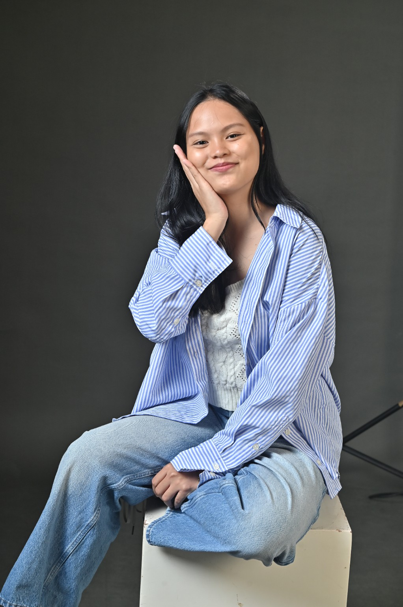

01
Sleep & stay home
I love resting and enjoying peaceful days at home.
MY LITTLE CORNER OF THE INTERNET
A Computer Science student learning one new thing at a time.
I love quiet days at home, music, sleep, and discovering things I never knew before. I'm here to challenge myself and grow through Computer Science.
Get to know me01 / INTRODUCTION
I'm Natalya Alexandra Chloe L. Bilon, but you can call me Natalya.
I'm a Computer Science student who enjoys sleeping, staying at home, listening to music, and learning new things. I chose Computer Science because I want to challenge myself, understand how technology works, and discover skills I have not tried before.
My mom also inspired my interest in hacking and computer security. I want to learn how systems are protected, how vulnerabilities are understood, and how technology can be used responsibly. I know I still have a lot to learn, and I'm excited to take it one step at a time.
My path into computing: My curiosity about hacking and the way computers work helped lead me to Computer Science. My mom encouraged that curiosity, and I chose this course as a way to explore technology, build problem-solving skills, and learn about cybersecurity ethically.
02 / PHOTO MOMENTS
Little snapshots that make this page feel more like my own.

03 / MY FREE TIME
A few things that make my days feel like mine.
01
I love resting and enjoying peaceful days at home.
02
Music is one of my favorite ways to relax and reset.
03
I want to explore painting and express ideas creatively.
04
I enjoy watching scary movies, especially Annabelle.
04 / MY FAVORITES
05 / WHAT I'M WORKING TOWARD
06 / STUDENT LIFE
My weekly classes at a glance.
| Subject | Day | Time |
|---|---|---|
| CS 101Introduction to Computing | Wednesday | 9:00 AM – 12:00 PM |
| CompSci P64CompComputer Science | Tuesday & Thursday | 1:00 PM – 2:30 PM |
| Math 101Mathematical Analysis 1 | Tuesday & Thursday | 2:30 PM – 4:00 PM |
| Math 101Mathematical Analysis 1 | Friday | 1:00 PM – 3:00 PM |
| GEC 11Understanding the Self | Friday | 9:00 AM – 12:00 PM |
| CS 102Computer Programming 1 | Monday & Wednesday | 4:00 PM – 7:00 PM |
| CS 102Computer Programming 1 | Thursday | 8:00 AM – 10:00 AM |
| PATHFIT 1Movement Competency Training | Saturday | 4:00 PM – 6:00 PM |
A little reminder to myself: rest when I need to, keep asking questions, and do my best all the time.
THANK YOU FOR VISITING
One class, one challenge, and one new discovery at a time.
Back to top ↑